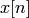
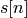
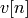
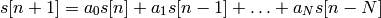

Linear Prediction of a Number Sequence¶
A neural network can be used to predict future values of a sequence of numbers. Wold’s Decomposition Theorem stablishes that any sequence can be split in a regular and predictable part and an innovation process (which is discrete white noise, and thus impredictable). Basically, any sequence  can be plit in two other sequences, such that:
![x[n] = s[n] + v[n]](../_images/math/7d55afe5d7e9d360908bb34312890806f24d61a5.png)
where  is the predictable part, and  is white gaussian noise. The sequence can be written as

where N is the order of the prediction. It is easy to see that this can be mapped in the output of a single neuron with N inputs, one output and activation function given as identity. This kind of neuron is usually known as ADALINE (Adaptive Linear Neuron, later Adaptive Linear Element). The goal of this tutorial is to show how to use the neural network implementation of Peach to do this.
As always, we first import numpy for arrays and peach for the library. Actually, peach also the numpy module, but we want it in a separate namespace. We will also use the random module to generate noise:
from numpy import *
import random
import peach as p
Our next move will be to create the network with the characteristics given above. To customize a neural network to work that way, we only have to pass the constructor the correct parameters. We will use 32 samples to make the prediction, so:
N = 32
nn = p.FeedForward((N, 1), phi=p.Identity, lrule=p.LMS(0.05))
Some initialization is needed. Instead of presenting a traning set and converging the network, we will present example by example. While it is possible to present a training set and let the network take care of the learning process, we want to track the error to plot its convergence. We will not show here how to do that (it can be done with a list, for example):
error = 1.
i = 0
x = zeros((N, 1), dtype=float)
Notice that the input to the network is a column vector. We will fill this vector with the sequence of numbers, the smallest index refering to newer samples. To delay the sequence, we just shift it one index back.
The sequence we will predict is the one generated by a cossinus and its value is given to the d (desired value). This value is not known by the neuron, and it will try to predict it (of course, in the first samples there will be a lot of errors, but the network is expected to give better results as time passes and new examples are shown). The neuron will use N (= 32) past values to predict the unknown value. To spice things, we add some gaussian noise (actually, it might help the convergence):
while i < 2000 and error > 1.e-10:
d = cos(2.*pi/128. * i) + random.gauss(0., 0.01)
# Here, we activate the network to calculate the prediction.
y = nn(x)[0, 0] # Notice that we need to access the output
error = abs(d - y) # as a vector, since that's how the NN work.
nn.learn(x, d)
# Here, we apply a delay in the sequence by shifting every value one
# position back. The newest value of the sequence is put in the [0] position
# of the vector.
x[1:] = x[:-1]
x[0] = d
i = i + 1
And in the end of this loop, the network will have converged and will be predicting correctly (as possible) the future values of the sequence of numbers. Using the matplotlib package we can plot the result of the prediction, the convergence of the prediction error, and in the second plot, the value of the prediction coefficients after convergence.